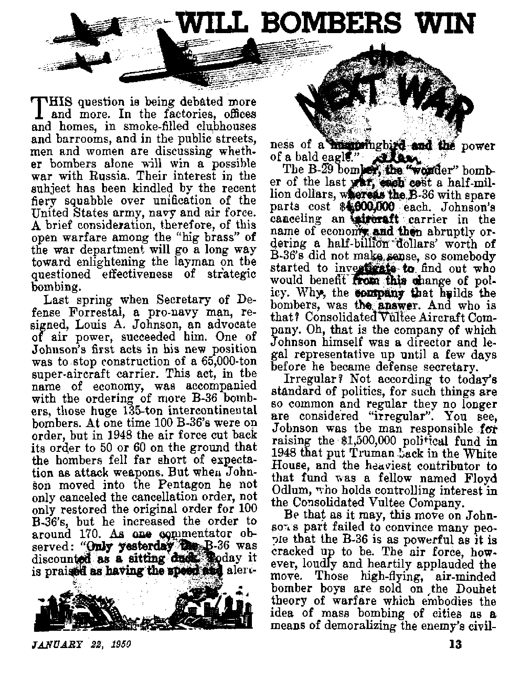
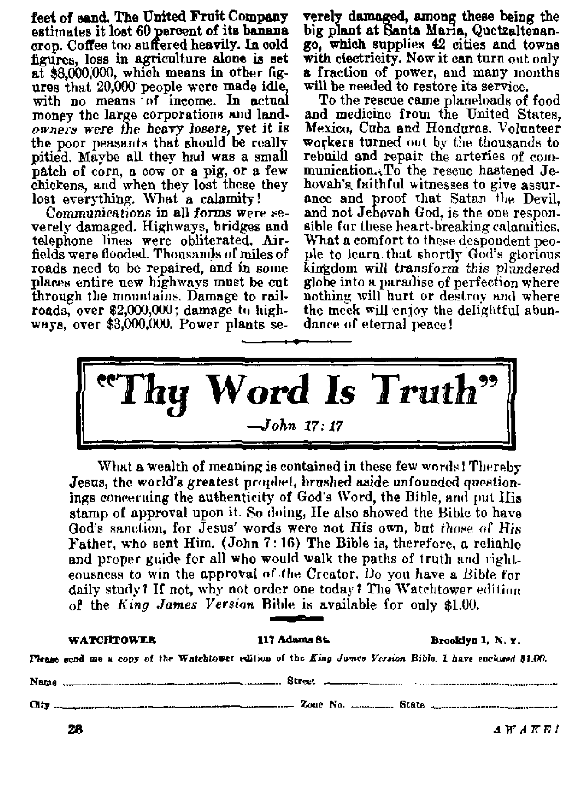

THE MISSION OF THIS JOURNAL
News sources that ar* abto to keep you awoke to the vital tnuea of our times mart be unfettered by censorship and pelfidh Infervrto. “Awake f‘* bo# no totter*. Ji recognizes tocta, faces facts* Is free to publish facta. It is not bound by political ambitions or obligations; it is unhampered by advertisers whose toes must not be trodden cn; it la unprejudiced by traditional creeds. This Journal keeps itself free that it may Speak freely to you. But it does not abuse its freedom. It maintains integrity to truth.
“*Awake!’1 uses the regular news channels* but is not dependent on them. Its own cornaspond^ntfl are on all continents, in scores of nations. From the four corners of the earth their uncenaored* on-the-scenes reports come to you through these columna. This journal's viewpoint to not narrow, but to International. It to read in many nations, in many languages, by persons of all agea Through its pages many fields of knowledge pass in review—-government, commerce, religion, history, geography* science, social conditions, natural wonders—why, its cover--age is as broad as the earth and as high as the heavens,
"Awake f* pledges itself to righteous principles, to exposing hidden foes and subtle dangers, to championing freedom tor all, to comforting mourners and irtrend Hunting those disheartened by the failures of a delinquent world, reflecting sure hope tor the establishment q£ a right' eoito New World,
Get acquainted with "Awake!" Keep awake by reading "AwakeF*
PUHM&HEP 3KMIXf>KTHtT Bit WATCHTOWER BIBLE AND TRACT HOCIETF, INC.
117 A llama -Street Brooklyn 1, N. Y.h FL 13, A.
W, JI. KXosh. Prr*<denf Grant WdiT!£R, fiecrehify
ffve cent* * cop/ Ona dollar a year
RtaHtaam ibcnkl t» ^ni lo tfla In m a*in-Uj |a cuojUiM* *Hb iwflitlont In cumin kill dtfrtlT tf *£C bnliUoa, x* Mr*(rtH *i AwUk f.ww am* atm » idta U k®>wd, by lokntatllMiil c*W «u7 Murtfpitai
■eiH lb Off«no; «u lw*r ruled in Ki
nmney.
Hrilrt 4 <viu rtimJ bl 14*1 b rH
>t i»p ImiM ^lon Mncnptlm bm4iv
Chu* *t iMrti »tro vnt u> our *Dct snj * np«Ud <«Ura within *m wnih f^oil fM old ** mil u M» «Wl*».
Ofteta Teeny SuUncflptUn HeU
A^wifa, at., n? Brooklyn 1. NT. fl
AMlnlle, 11 tkn-rferd BhI, iirtthfeW, M.H.W, CeaM*. 4U Inrio Ate., Ttneu 5, Udufc 11 EntleeL JU Cr»*W T*TK*, tartm. W S 5* teeth Afrha. 613 Jkniim House, €»?• Town EH
Bntand n xnul-dex «t Broctva. N. I,, 1q * hurt 3, left. Printed to U fl. A
CONTENTS
.Arc Workers Mi?re €vutented Nowf
Shortage of 'Materials and Trade
Secret. Police and Spying
How U. S. and U. N. Might Help
Will Bombers Win the Next Wart
High-Plying Theories Shot Down
Relaxation and Simple Pleasures
Will Public Schools Perish f
Mn Urlon-»-fl Fiber with a Future
Scientists, Predict the Future
"Thy Word Is Truth"
And the Rains Camo tc Guatemala
®^fNow it is high time to awake.'—Romans 13:119)
Volume XXXI Brooklyn, N. Y., January 23, 1950 Number 2
The following article is revealing. It Is written by a businessman who Is neutral relative to the political lams that divide this world. His report, therefore, is free from propaganda motives for either East or West, It merely sets forth wliat this businessman heard and saw when he recently traveled to the International fairs in Czechoslovakia and Yugoslavia. His report, written October 18, 1949, and contributed to the “Aimke!" magazine, gives an impartial look behind the “iron curtain”. Read It to be instructed.
CQ A you still the owner of your
ZJishopF I asked a gent Ionian at Prague. “Yes, T am still,” he said, “but in no case shall 1 he beyond the end of this year, and perhaps already tomorrow a commission conies, without previous notice, and informs me that my shop will become the property of the state and that they will take the stock right away.” “And then you get a paper, don't you, on which the commission states the value of your business?’' “Yes, but such statement is not worth more than the paper on which it is written; nothing wall ever be paid?’
He looked suspiciously toward a friend who accompanied me and who had taken a seat in a corner of the shop, and said in a low tone which betrayed his uneasiness: “Who is the gentleman who is with you?” I assured him that he need not fear that he w^ould be betrayed to the communist Gestapo of his country.
This is wThat happens or has happened to all the citizens of Czechoslovakia who had a business, small or great. It began wTith the large enterprises, and then more and more private businesses were nationalized, down to 100 workers, then down to
50, afterward down to 10, and eventually the rest according to a rhythm determined by no other consideration than the capacity of the governmental and party machine. If you are a shoemaker and have in your employ another shoemaker, you are exploiting this man and belong to the bourgeois-capitalist class. You are not a “worker" in the sense of communist doctrine and accordingly you are not entitled to food and textile coupons. Being an exploiter you have earned enough or, if your business has not yet been pushed into the cogwheels of the bolshevist organization, are earning enough to buy your and your family’s necessities on the
Black Market of the State
On that black market you pay six to eight times the normal price, the price fixed for merchandise sold against coupons. There are shops selling only against coupons, and others selling only without coupons. This free market of the state is the second step to liquidate and ruin the bourgeois-capitalist class. The first consists in nationalizing a private-owned business, whatever its size, and the second in forcing such a person to
spend what means he may yet have for procuring the necessities of life at prices which would make the heart of any blackmarket dealer in non-communist countries jump for joy, and which bring great sums into the state treasury of such a communist state,
Thun it is no wonder that the government in Prague could announce in August or September that the state accounts dosed with a surplus of 16 billion (Czech crowns). To the communists this is evidence of the splendid governmental ability of the communist rulers of the country and of the excellency of the Marxist doctrine, but there is nothing “splendid” nor "excellent” about it when you consider that these surplus amounts have simply been taken away frum tens of thousaads of citizens of the country either by nationalizing their property or by forcing them to buy tilings at prices which mean a profit of six or seven hundred percent the government.
If with a view to avoid the worst you make up your mind to meet the commission which comes to dispossess you with a smile, and if you are thus able kt make them think that you believe in the justice of the procedure, that you sympathize with communism, that it is all for the good of the people as a whole, then they may let you carry on as manager of your former business, hn an employee of the state. But-you are not on safe ground, because a short time after, perhaps only a few months, you may be dismissed the same as you may have once dismissed your employees, and find yoarsclf on the street. If you have some means of your own you may continue to live for a while without becoming a "worker”' of the state, but, as recent developments in Chechoslovakia show, people of this kind are now, according to existing prescriptions, being forced more and more to accept any wo rk the state may think proper to give them, work in coal mines, work in connection with government building
programs, or work in the uranium mines of Joachimsthal.
Since it is the "dictatorship of the proletariat” does the proletariat now enjoy better conditions of life, a higher standard of living, better working conditions? Only fanatical communists will answer positively and will make themselves believe such declarations as the following which was displayed in big letters in four languages in the Fair building'at Prague: “WeTire happy to )ivu m a time when our work has a real sense, when it is joyful and leads us toward socialism. We wish to all the nations of the world that they get to know the new spirit trf work such as we know it, and that they understand the new idea of people’s democracy.”
j4re Worker® More Contented Now?
These communists will say that now every worker has theposaibility of reaching the highest positions it' he is capable, Thue in September the government announced that ‘till now 200 workers have limjme directors of nationalized enterprises". If one had a possibility to analyze these cases one would find that these “directors”, although they may have shown initiative and ability, have* become such mainly because they were deserving of the communist party. In most eases such men are at the top because a communist is wanted at the top and because they want communists to draw the highest salaries, but the real managing is done by technical and commercial directors.
The government, in order to have some basis, mutd create a class of beneficiaries of the regime who will sing its praises and defend it, defend it for selfish reasons. If they admit some defects and deficiencies, these are only temporary, they say, and claim such are from the former capitalist regime, and that within a ahort time they will be overcome and socialism will prove itself beyond any doubt to be the way which will eventually lead to communism, which will be -the
highest form of human communal life, a class-less society, and which will make for the happiness of everybody.
The communist also tells you that it is right to force such a regime upon a majority of people who do not want it because they don’t know what it is, that it is bht out of ignorance that they decline it Therefore, because it is all for the good of the people, there is nothing wrong in using force to establish such an order of things.
But the common workman finds that working conditions are worsening more and more, that he has to accept without murmuring what he fought against under capitalism. More and more is expected of him. Norins are established on the basis of the performances (real or alleged is not sure) of so-called "Heroes of Work” which he is simply not able to reach. In this case his salary is reduced. There are cases where the working time is prolonged up to 20 percent while at the same time the salaries are reduced by a like amount for all those who are not able to work according to the new norms fixed by the communist or holshevist taskmasters, so that the total reduction in salary would amount to about 40 percent.
Such methods applied to the workers of the whole country hring billions into the state treasury. Such new norms would never be accepted in non-commu-nist countries, and the communists in such countries would cry and protest the loudest if any attempt were made to introduce in such capitalist countries the norms which their communist brethren find all for the good of the people in the countries ruled by them. What we say above is based upon utterances of a number of workers, some of whom have worked for twenty or more years in the same works and who are now expected to do jobs in a time which they declare absolutely impossible. It seems that the communist taskmasters are every bit as zealous as capitalists in cracking the whip over the back of the laboring man. Contentment has not resulted.
Shortage of Materials and Trade
The Czechoslovakian government is said to have grave difficulties as regards providing certain important raw materials which can be supplied only in sufficient quantities or in any quantities by the United States and other countries of the Western world. The communists are inflamed about this situation and say that only a war can solve this problem, that all the raw materials of the world are the common property of the peoples and that the capitalist world must be overthrown so that 'the democratic peoples have free access to these necessary supplies’. After the world has become a ‘‘people’s democracy” there will b&'plenty for all. The problem is really a very serious one for these communist governments, and they may in the end see no other way out than to try to conquer the “rotten capitalist world”.
Czechoslovakia depends to a very great extent upon trade with the West. One can see this when visiting the International Fair at Prague. According to the Fair authorities’ pwn statistics some 80 percent of the textile production goes to countries outside the communist realm. The day that the capitalist importers of these goods should decide to boycott Czechoslovakia, such action would have very grave consequences upon the national economy of this country.
It seems that foreign merchants have already become less interested in Czechoslovakia as a supplier, for last spring airplanes brought but a few buyers from England, and this autumn certain hotels where foreigners were wont to stay had even far less visitors than last spring. Russia will not mean a compensation in this respect, because they do not want to pay proper prices, and with their money nothing can be bought from the United States of America.
So the situation is a gloomy one. That the government does not'feel at ease is evidenced by its recent actions chiefly against middle-class people, according to press reports. How could any government feel Safe when it knows that only a small minority of the people stands faithfully by it and that its safety rests wholly on the armed forces which it commands, such as police and militia1?
And now let us go down to
Yugoslavia
to see how things are in Tito’s country. There are many people thinking that conditions must be better in Yugoslavia for the simple reason that serious disagreements have developed between Moscow and Belgrade, Mqny people think that from the fact that Tito is at odds with his Eastern neighbors the conclusion may be drawn that he is a “less good” communist than his former allies. The fact is that Yugoslavia is the worst police state of all the countries under Bed dictatorship. Your correspondent has visited most of the Cominform countries and in none of them has he found so many secret agents or been told about them as in Yugoslavia.
And why are Russia and Yugoslavia at oddsf Tito agreed to receive Russian instructors for the Yugoslav army, but Stalin wanted to send not only instructors but commanders. This spoiled things. Belgrade did not want commanders. Stalin requested that his instructors or commanders be paid a monthly salary of 40,000 dinar ($800), while the Yugoslav officers of the same rank get but 4,000 dinar ($80). Tito’s government stated that such difference of treatment was impossible because it was grossly unjust and would cause trouble in the Yugoslav army. Russia wanted to supply arms to Yugoslavia, but when the supplies arrived it was found that the arms were not of the latest make, that Russia had seized the opportunity of getting rid of obsolete armaments at good prices,
So Belgrade gave Moscow to understand that they, were willing to buy Russian arms but pot old stuff, Moscow demanded that Yugoslavia stop Indus trialing the country, for the reason that Russia would supply finished goods and Yugoslavia should supply raw materials. With this Tito did not agree either. Fot such reasons and others the break between the two countries became unavoidable.
The Yugoslav communist government wanted to remain independent. It did not want Russian trusteeship or tutelage. This was intolerable for Stalin. Belgrade thus proved to be ungrateful. Every country “liberated” by the Red army has for such liberation contracted an eternal debt of gratitude toward Soviet Russia and on account of this'Russia considers itself entitled to demand practically everything of its satellites; for instance, supplies at very low prices, for certain manufactured goods at prices which ane only one-third of the cost of production. Belgrade committed a capital crime toward Moscow in expecting and then demanding equality of treatment in trade relations as a simple matter of fairness. The former Hungarian minister of foreign affairs, Laszlo Rajk, hanged on October 15, 1949, is an example of what happens to communists who want to maintain national independence. Moscow through the .Cominform organization demands absolute obedience to its wishes and instructions and' woe to the one who deviates therefrom.
Stalin’s disappointment as to Tito must be all the greater as every person one has an opportunity to talk to in Yugoslavia confirms that Tito is not a Yugoslav but a Ukrainian or White Russian smuggled in among the partisans while the war was still on. One is told that the authentic Tito was a peasant leader of Croatia, also a partisan, who fell in battle. Thus Stalin’s own creature did not show the submissiveness he had expected from him.
General Situation
That Yugoslavia made common cause with the other “people's democracies" till spring 1948 was not to its advantage. It is in every respect a poor country, but although it had to look to the West for new trade partners Tito has time and again stated that he and his party want to stick to socialism and eventually bring about communism. Considering the party machine and organization, it would certainly be difficult for him to change his political doctrine without making himself impossible to his party comrades; but nothing indicates that Tito has any such intention.
Only about 10 percent of the population are said to he communists. But there is a political mass organization called the “people’s front" with 7,768,328 members out of a total number of voters of 9,014,645, according to official data. How solid an organism this is is impossible to say* It is, of course, dominated by the communists.
The people are generally poorly dressed. This is not surprising when it is considered that the average monthly wage of a worker is 3,000 dinar ($60) and that the prices of commodities are higher than those in the U.S.A. The few who have proper clothing are mostly materially favored communists or persons of the liquidated bourgeois class who were once better situated. “Workers" are only those who work in state enterprises. In this respect the situation is exactly the same as in th$ other Cominform countries. The bourgeois-capitalist class has been or is being liquidated in exactly the same way as in Czechoslovakia and the other countries behind the “iron curtain".
But even “workers” do not get enough coupons to buy the necessities of life at the normal prices, at prices which are somewhat higher than those in the U.S.A. So even the “workers” are forced to buy part of their food and their clothes at the black market prices fixed by the government and which are six to eight times as high as the normal prices. Thus an umbrella of the simplest make (there are only such) costs 2,000 dinar ($40), a coat of average quality 10,000 dinar ($200), a shirt which in America may cost $2.50, 700 to 800 dinar ($14 to $16), a pound of fat 250 dinar ($5), etc., etc. Consider such prices (and even the normal prices) and the monthly salary of $60, and you will understand that the situation is very, very bad.
Secret Police and Spying
The party dictatorship, like that in Russia and in the other communist-controlled countries, calls for an omnipresent secret police armed to the teeth. Secret agents are everywhere, in hotels, trains, among the crowds on the streets, in queues, generally everywhere where people gather. The spying system covers the whole country.
In the cities practically every house with several families has its communist watcher whose duty is especially to see who goes in and out of the house, particularly persons who do not live in the house* I know of examples where such communist watchers want to know with whom strangers to the house have been and what they have done there. It may happen that a few minutes after you have begun talking to somebody in the street a secret agent places himself at a yard or so beside you to listen to what you say. In such a case you quietly move on, of course. At the International Fair at Zagreb girls were stationed in the enclosures of foreign exhibitors to watch Yugoslavian visitors contacting foreign representatives.
Thus before you open your mouth you have always to make sure that nobody hears you who might betray you to the secret police, for if you said anything disrespectful about the ruling party or showed your discontent with existing conditions, a few days or weeks afterward you might hear a knock at your apartment sometime after midnight and, opening, be invited to follow the men who came for you. You may not even remember that you made certain statements or where you made them, or you may not have done it in an intention to agitate against the government, yet you are squeezed into the gear bf communist Justice and your relatives may not learn for some time,where you have been taken to, if they ever learn about it at all.
How U, S. and U. N* Might Help
If, now, the United States wanted to. help Yugoslavia it would accomplish a useful task if, before lending any support in an economic way, it demanded the liberation of all the political prisoners and of all those who for reasons of faith and conscience languish in filthy Balkan prisons. The Human Bights Commission of the U.N. might also do well in demanding admission to Yugoslavia to inspect prisons and camps and see for itself how the most elementary human rights are woefully trampled under foot. But nothing indicates at present that such a practice will be put into force. If Yugoslavia wants help from Uncle Sam, the latter might certainly be in a position to make such help dependent upon concessions on Tito's part in the sense of releasing innocent victims of communist revolutionary Justice.
“Voluntary” Working Service
Another thing that may be mentioned about the Yugoslav dictatorship is the voluntary working service,. The fact is that there is very little voluntary about it. Everybody, except the aged and dis-, abled, are expected to do a minimum of two hours voluntary working service per week, or 104 hours per year. Such work concerns clearing away debris, building new roads, autostradas, railroads, hydroelectric works, etc. Such service is officially said to be voluntary but is not in practice. If you do not participate you risk getting no wood or coal to heat your flat during the winter season and, of course, you get into a bad light with the almighty party.
The two hours a week you are expected to work after your ordinary working hours. The Yugoslav leaders want to make foreigners believe that it is really voluntary, and they succeed in having even noted foreign writers publish commending articles on the “voluntary national effort of the Yugoslav people”. Such statements were, for instance, made by Jean Casson, the well-known French writer, who seems to be an honest person. But his mistake lies in this, that he must have got his information from official communist circles instead of by interviewing the ‘Win in the street” without the presence of communist agents.
It is in no wise your correspondent's purpose to blacken the efforts and performances of the Yugoslav people accomplished in every domain of national activity. On the contrary, the will of the Yugoslav government to improve the economic situation and the social standard of the people must be recognized. But what we want to do is to draw attention to the fact that the freedom of the people is not respected, that pressure and coercion are used to bring about the desired -ends, the same as everywhere else where Marxism is put into practice.
One last thing we wish to mention and which is common to all countries under the Bed dictatorship is the glorification of man. Atheism has dethroned God and has deified man. This is test seen in the person of Stalin, whom they call “the leader of the peoples”, 'vthe sun of the Soviet peoples,” etc. In the Russian sections of the International Fairs in Com-inf onn countries gigantic pictures of Stalin are displayed, and on either side of him dozens of pictures of second-rate notabilities of Russia, The Cominform countries, and Yugoslavia as an ex-satellite, imitate to some extent this mania to glorify mortal man, to draw the attention of the people to the “great things” man is doing, whereby the Devil tries more and more to get the Almighty God out of the minds of the people. Such dethronement of the Most High by puny man will precipitate the doom of such peoples.
Indeed, Armageddon, the battle of the great day of God Almighty, is near, when by the destruction of Satan's world all oppression will cease and when the people of good-will will forever enjoy living in full freedom on the earth under the glorious kingdom of Christ, the Prince of Peace.
noinenal discovery I” “The most important discovery ever made in Old Testament manuscripts!” Such is the way the recent finding of an ancient scroll of Isaiah's prophecy was hailed, and with good reason too. Think of it, practically a complete copy of the book of Isaiah, a copy more than 2,000 years old, more than 1,000 years older than any Hebrew manuscript roll hitherto found!
No wonder this priceless scroll was put under heavy police guard when brought out of its vault and placed before television cameras on May 5, 1949. No wonder the newspapers and magazines featured many stories about its discovery. No wonder thousands upon thousands of people lined up to get a glimpse of it when the Library of Congress put it on public display for the first time on October 23 near the shrine of the United States Constitution and the Declaration of Independence.
In the minds of those that viewed this
JANUARY 22, 1950
sacred scroll of antiquity there were many mixed emotions, interests, feelings and questions. Some wanted to know how its age could be determined, how one could tell that it was genuine and not a forgery, how valuable it is, and whether it differs much from the book of
Isaiah found in our Bibles. Others wanted to know how it had been preserved, where it was found and who foundit. Still others were more interested in the actual scroll: its size, length, and the irregularities and pecnliarities of its writing. Some of these questions are easy to answer; others take more time to explain.
All together the scroll is made up of 17 parchment skins sewed together to make a strip 23| feet long. The skins vary in color'from light tan to dark brown, and in length, from 10 inches to 25 inches. The short skins contain 2 columns of writing, the long ones 4 columns, and the" columns average 29 lines. With few exceptions the words are carefully divided, which makes it unlike the Greek uncial manuscripts. Sentences, however, are not always separated, and paragraphing is crude. On the whole the scroll is in excellent condition, and it is this fact, in view of its age, that makes people interested to know where and how it was preserved and how it was discovered.
The story goes back to a spot on the northwester^ shqre of the Dead Sea in the land of Palestine, about ten wiles south of Jericho. There, in the spring of 1947, an unwitjing goat with the instinct to climb, led his Bedouin goatherder in a chase up the side of the rugged cliff and past the narrow entrance of a cave which was not visible from the plain belo^v. Marking the spot the Arab Bedouin returned later with a companion to investigate the cavern. Once inside in the dim light they spied some sealed earthen jars —maybe containing hidden treasures, they thought. Upon breaking, them open, to their astonishment, instead of glittering gold or precious jewels, a number of old leather rolls tumbled out, worth far more than their weight in gold, if they only knew it. Somewhat disappointed, they reasoned that maybe somebody would buy them; so, as true sons of the desert, they divided the cache and departed for the cities.
One of the Bedouins of fortune took his booty to the museum of the Hebrew University in Jerusalem, while the other, thinking the curious writing which he could not- read must be Syrian, went to an antique dealer in Bethlehem. Eventually Mar Athanasius Y. Samuel, the Syrian archbishop of St. Mark's Orthodox Convent in Jerusalem, purchased these latter scrolls, among them being the one of Isaiah, though the archbishop did not know it. In fact, no one was sure of what these scrolls contained until they were taken to the American School of Oriental Research in Jerusalem on February 19, 1948, where the acting director pro tem of the school, Dr. John C. Trever, was sharp enough to recognize one of the scroUs as Isaiah's prophecy. Thereafter the other scrolls were identified as a commentary on Habakkuk, a sectarian document of a rabbinical sect, and an apocryphal writing in Aramaic called the Book of Lamech.
However, it was only after photographic prints of Isaiah were airmailed to Prof. W. F. Albright of Johns Hopkins
University that the archbishop learned what a truly valuable scroll he possessed. Albright in reply wrote: “My heartiest congratulations on the greatest manuscript discovery of modern times! There is no doubt in my mind that the script is more archaic than that of the Nash Papyrus. ... I should prefer a date around 100 B.C. r.. What an absolutely incredible find/ And there can happily not be the slightest doubt in the world about the genuineness of the manuscript/' This was Albright's first impression. Later, his more considered opinion pushed the date back further, “to the second half of the second century B.C/' Other scholars suggest a date even 50 years earlier than this.
Proof of Antiquity
As might be expected, some questioned the venerable age of the scrolls, saying it was impossible for parchment to endure 2,000 years of corrosion. Zeitlin of Dropsie College and Lacheman of Wellesley College were among the critics. But for every doubter there were several noted believers. Besides Trever and Albright such men of renown in the fields of archaeology and paleography as Profs. H. L. Ginsberg and Saul Lieberman of the Jewish Theological Seminary, Dr. S. A. Birnbaum of the School of Oriental Studies, University of London, and Prof. E. I. Sukenik of the Hebrew University in Jerusalem, all agreed that the writing on the scrolls belonged to the first or second century before the birth of Christ. Asked the critics: Where is this cave? Has any reliable archaeologist investigated it I Where are the jars in which the scrolls were supposed to have been stored? Good questions, these.
With the aid of the Arab Legion an expedition was organized to answer them, and in the early part of 1949 the search was made and the eave now known as Ain Feshkha was found. G. L. Harding, chief curator of antiquities of the Hashemite Kingdom of the Jordan (formerly “Transjordan”), and Pfcre R. de. Vaux, director of the French Archaeological school in Jerusalem, assisted by other scientists, went to work combing the debris of the cave with penknives. There,.they found a fabulous amount of evidence removing all doubt as to the age of the scrolls. They found pieces of the same linen with which the scrolls were wrapped. A small number of papyrus fragments were found together with more than 250 fragments from leather scrolls, some of which were identified as belonging to Bible scrolls of Genesis, Leviticus, Deuteronomy, Judges and Daniel The fragment of Leviticus is even older than the Isaiah scroll, possibly written as early as the fourth century B.C., which make^ it by far the oldest bit of Biblical manuscript yet found!
These fragments were important in establishing the date of the Isaiah scroll, since the writing was of the same period, yet was written by more than a score of different hands, thus canceling the charge that Isaiah's scroll was a forgery and a hoax of the Middle Ages. Chemical analysis of the ink on the fragments, according to Dr. H, J. Plenderleith of the British Museum, also showed that the pigment used was carbon, not iron, and belonged to the Graeco-Roman period of the first and second century B.C.
Overwhelming proof of the genuineness of the scrolls was found in the great quantity of pottery fragments recovered from the cave. The jars must have been of about the same period as the manuscripts, for not even a first-class forger could have found so many ancient jars in which to'store the scrolls. According to Harding, and all the archaeologists that have looked at them agree, the pottery of the cave belongs “to the late Hellenistic period—i.e., the late second, or, at latest, early first, century B.C.”
Originally there must have been some 40 jars, each a foot in diameter and two feet high and able to hold several scrolls, JANUARY £2, 1950
Hence, there must have been an entire library of at least 200 scrolls stored here for safekeeping. But the fact that so many jars were found, yet so few scrolls, raises the question: ffWhat became of the otherst” Based on circumstantial evidence it has been suggested that Origen, who lived about A.D. 185 to 254, or some other person at that time, raided the cave and made off with the library, leaving behind a few copies (17 so far found) for this twentieth century to ponder over. In the cave a Roman lamp and part of a cooking pot of the third century A.D. were found. Most of the pottery fractures are hundreds of years old. And Origen himself says that about the year 217 from a place near Jericho he obtained scrolls that had been wrapped in linen and stored in jars. These he used in his famous Hexapla of the Bible. Other early church fathers (Eusebius, Hieronymus, Epiphanius) mention the same thing.
Scroll*^ Value
And What is the value of this ancient scroll of Isaiah? Being more than a thousand years older than the Leningrad Codex written A.D. 916, language scholars who for the most part are ‘"higher critics” were astonished to find that aside from certain variations in spelling, a minor point., they admit, this scroll is identical with the accepted Masoretic Text from which our translations of the Bible have been made. From the ancient ink on this scroll, then, the inspired prophet Isaiah speaks out with all the grandeur and eloquence of 27 centuries ago, declaring: “The grass withereth, the flower fadeth: but the word of our God shall stand for ever I” (Isaiah 40:8) What assurance in those words! Long after'Armageddon blots out the enshrined Constitution and Declaration of Independence and other documents of men the Word of our God Jehovah shall stand vindicated in theh coming new worfl of righteousness!
11
By “Awoke!" cemopondent In Antigua Situated between the wotcra of the North Atlantic and the blue Caribbean ic the group of Leeward 1 elands, otte of which is c&Ilod AntigiM, meaning “no water1’. That is the name ColumbUn gave this little island of IU8 square miles, and rightly ao, fur it is a rivertess land with few springs or fresh-water streams. Even the streams are no more than erosion ditches down which surface water drains during1 the rainy seauon from July to Oetn-her. In tta long dry season, November through June, most of these water courses become dry. <L The scarcity cm this island of the precious lifesustaining fluid calted “water" is caused by the fact that the hills uro net high enough in altitude. Most of the hills are less than 1,000 feat in elevation, while the highest, 1/109 feet is 700 feet short of being lofty enough to capture the moisture from the high-flying water-laden clouds. As a con* osqnenee, airborne cargoes of priceless water pass overhead and drop down on loftier neighbor islands—St. Kitta, Montaerrot, Dominiea and fit. Lucia—while disuppointed, thirsty Antigua help-tefisly gsxee heavenward, wandering why her skies are bo heartless and indifferent to her crying needs. C One of the mort aggravating things about this ud matter is that the annual rainfall nf 44 or 45 inches is far more water than is needed. Before it can be caught or used, however, 95 percent of the thirst-quenching liquid quickly runs back into the never-satisfied reservoir of the ealty wss. When it rains about all the thirsty population can do is to fill their pots and pans and think how wonderful if they only had more pots and paua.
<L Maddening, indeed, that such a calamitous condition should exist in this age of advanced eugi-neering. Yes, engineering could correct this, painful fiitUHticn tu a large degree, not in causing it to rain attha will of man, but in conserving and saving for future age the water that folia. That Lbw is possible is demonstrated by the few catchments that have already been constructed. There is one reservoir called Body Ponds about eight miles from the capital of St. John's, and two city ponds of fill capacity, plus a few wells which wore sunk in 1923., hut these are fi]together Insufficient ||
12
i t t t
Ji
for the ever-growing population now numbering about 35,(MW. If more man-made basins of earth works and concrete were constructed and equipped with modern pumping stations, the needs of the people as well bs the nmuir&uenis of their cattle could be cared for very nicely.
W, One reason why such modem improYemente are slow in coining is that it costs money, plenty of money, to install u first-chiBs water system. Another reason ij that Lbe authorities themselves, the ruler? and the richer flatus, do not sn-ffar as much au the common people, since they have private cisterns to fall back on in times of shortages and drought The poor classes are the hard-pressed victims, for they have to trudge long distances to reach a stream tint by now is probably no more than a mere trickle, and there, in whatever receptacle they have, they obtain a little water for tbeir families. A strenuous ordeal, C In times of water shortages these humble folks also have another problem besides getting water for themsdYea and their livestock. They have a great deal of self-respect (lmt demands tliat they wash themael^s and their clothing. Ro in the same trickling streams from which they endeavor to quench their thurt, they also do the family washing, turning out snow-white shirts and dressejj.
C These conditions arc nothing novo! to the people of Antigua. Through the centuries of the past they have thirsted for water, hs, for example, in the fateful year of 1933, when water was hauled in from nearby islands and sold at frightful prices. Tn 1937, 5,000 cattle perished from thirnl and human life was in peril before relief camp. C Until ream Uy the good people of this 'fno water" island suffered from another type of water shortage, not "a thirst for water, but of hearing Iho words of Jehovah", (Amos 8: Hf Am, Stan. Fer.) They eriftj to God and He ULimvvd Heir prayers and sont His faithful witnesses to this parched comer of Christendom. Tbe&e brought showers of refreshing rain from the Lord, “living waters" that whosoever drank thereof would not thirst again. (John 4:1114) “And the parched ground shall become a pool, and the thirsty land springs of water/’ when the prophecy is ctunpieie-ly fulfilled in ths new world.—Isaiah 35: 7.
AWAKE!
ian population and making: him incapable of waging war due to the fact that his factories have been destroyed.
Such mass bombing, in the language of the militarist, is called strategic bombing as opposed to tactical bombing, which latter employment of air power has to do with giving air support to ground forces, guarding bases and supply lines from the air, and harassing the enemy by hammering < at his advance forces, communication lines and supply depots. Strategic, not tactical bombing, is "the heart of the air offensive" which is supposed to be the main factor toward winning the next war, according to the secretary of the air force, W. Stuart Symington.
Paper Plans for Next War
As to the effectiveness of such bombing and the ability to knock an enemy out fronj the air, there seems to be no question in the minds of the air force. With glory and pride they point to the last war: how the Germans “blitzed” Britain • how wave after wave of British night bombers were sent over Germany; how great fleets of American superfortresses carried out daylight precision bombing. With enthusiasm they recall the round-the-clock Berlin airlift as an example of aviation's ability to deliver the goods.
With excitement they rattle off a whole line of postwar advancements in aeronautical research' and development, among these being the perfection of round-the-world nonstop flying. They boast that long-range intercontinental bombers are now capable of flying to any point on earth, there drop their 10,000 pounds of bombs and return to United States soil without using foreign bases. Then, too, there are new and improved atom bombs, designed to release indescribably greater death and destruction than anything thrown against Germany in the last war.
Though the military experts themselves are careful to avoid claiming that these advancements in bombing science can win the next war, the impression is created in the minds of ill-informed and over enthusiastic individuals that a few squadrons of B-36'b dropping atom bombs on Russia's industrial installations will knock her out in the first few hours of the next war.
Describing how the next war will be fought, advocates for the mass bombing of Russia's cities boast that night missions of B-36's will fly at 40,000 feet altitude, will be out of reach of fighter planes, will carry enough guns that they will need no escort planes, will he undetected by radar equipment, will drop their atom bombs with is great an accuracy as medium-level bombers did in the last war, and will fly nonstop to the heart of Russia and return. By the time the stockpile of atom bombs is used up, they think, the “big red bear", if not altogether knocked out, will be so groggy it will be an easy matter for ground troops to mop up any resistance,
Ruthless and brutal T Immoral, wanton and a fiendish destruction of noncombatants and innocent civilians T Most assuredly! But militarists who plan such type of w;ar push all moral principles out of the picture. War is war to them. “From a military standpoint, any damage you can inflict on the war-making potential of a nation, and any great injury you can inflict on the morale of that nation, contributes to victory, . . . Your military planners must plan to win. There is no second prize for the runner-up. As far as I am concerned war itself is immoral," so says this country's chief militarist, Gen. Omar N. Bradley. To which adds secretary of the air force, Symington :JT can't see the difference between trying to stop a man at a lathe building a bomber to attack us and trying to stop a soldier,... If civilians are going to be killed, I had rather have them their [the enemy's] civilians than our civilians,"
and it would take more than an AllAmerican tackle to buck that determined line.
On the majority of the railroad lines, some of which are narrow-gauge, the old-fashioned steam engine is used, fondly called by the Brazilians “Maria Fu-ma^a” (Smoky Mary). She is true to her name. Watch her coming along, leaking forth hissing steam on all sides, and billowing forth voluminous clouds of black smoke and soot that settles over everything. There are, however, some streamliners, and Diesel engines are taking the place of steam between Rio and Sao Paulo, part of which line is already electrified. Train schedules on most lines do not mean too much, and it is not uncommon for a train to come in hours late. First-class travel is comparable to second-class in the States, and the second-class offers the ordinary trolleycar type of seat. As most other means of transportation in Brazil, the trains are always overcrowded, aud women with children in their arms frequently will journey a whole night through standing up. Still, it is better and faster than riding by horse and wagon, as so many do, or taking an oxcart drawn by white zebus, which animals are common here. Others will strike out on foot rather than take a train. Some of the caipiras (hillbillies) dread train travel and will walk many kilometers, frequently with a heavy load balanced on the head, rather than take a train.
"Jardineircw”
Buses also help one get around. The buses in the city are tolerable, some very modern ones having been imported, but the jardineira of the interior is an actual miracle, seeing that such old, broken-down jalopies can still run. There you sit, on low, wooden benches close to the floor, with your knees doubled sharply. Lack of shock absorbers on these rattletraps means that the passenger must absorb anv and all shocks. Usuallv there are no windows, and the only feeble protection against heavy downpour is a cloth flap which serves to concentrate all the individual drops of rain into one steady stream that drips into your shoes or onto the back of your neck from your neighbor's flap. _
In many parts of tEe states of Sao Paulo and Parana there is a rich, red earth which, when dry, is as fine as powder and stains one's clothes and body, and, when wet, cakes on one's shoes until they become the size of the proverbial millstones and feel just about as heavy. The jardineira skids on this red clay worse than on ice, and you frequently find the car skidding along broadside on these dirt roads they travel, splashing mud onto all the trees that line the highway, and finally ending up in some ditch. Then all passengers have to hop out and push the bus out of the sticky, red cflay, in the midst of a steady, drenching rain and with several pounds of mud clinging to each shoe.
Bridges are lacking very often, and the only means of crossing rivers or streams is by way of rafts. These are usually large enough to hold a bus or truck. A wire cable stretched across from bank to bank keeps the raft from floating downstream, and the force of two strong men tugging on this cable is sufficient to help pull the raft across to the other side.
Cable Train
Just time to mention one more interesting item in Brazilian travel. It is the engineering feat of stretching a railroad from the seaport of Santos to Sao Paulo over a mountain range, the “Serra do Mar", The train is enabled to climb over 800 meters (2,625 feet) within the short distance of 10 kilometers (about 6J miles), and pass over the mountains and continue into Sao Paulo. The stunt is done with specially-braked locomotives and cables, and a seesaw arrangement, as follows.
An ordinary locomotive pulls all the train coaches to the first landing of the five inclined planes. The train is then divided into several sections of coaches, each of which sections is then attached individually to a special locomotive called ‘T oco-brake^, having especially strong clutch brakes that are built to secure on inclined rails, as well as having emergency rail-hooks that can also be used. This Loco-brake engine hooks onto a powerful cable that runs along between the rails up to the next landing and then back down again. On this upper landing is another train waiting to come* down, which is also attached to the same cable. Thus, as one train goes up with the aid of the moving cable, the other comes down, and the weights of the two trains counterbalance each other. At the upper landing, the loco-brake unhooks from the cable and pulls the coaches to the next cable where it hooks on, repeating the same process until the train comes over the fifth inclined plane and is joined again to an ordinary steam locomotive, read/ to head for the teeming city of Sao Paulo, the Chicago of Brazil.
Train sections follow each other at nine-minute intervals, the time*it takes to go from one level to another. There is little danger of these cables’ breaking, since they are really several strong cables intertwined and approximately two inches in diameter. They travel along smoothly and continuously over 4,800 rotating, plow-shaped pairs of wheels, evenly spaced along the tracks. Interesting, also, is the fact that three rails are used instead of four, the left rail and the center one employed in ascending and the center rail and the right
one in descending, and using double sets of rails only at points where trains pass each other midway along the cable.
At each landing underground are 1000-horsepower traction machines with large, braked wheels which the cables loop five times. In cast of emergency these wdieels can secure the cable and arrest the trains moving along the inclined planes. So, in addition to the counterbalance of the trains, and the protection through the loco-brakes, there is also an added counterweight, at ehch level, of 7 tons by these tremendous underground brakes. j
A most interesting feature of this engineering maneuver is that it was not done recently. In fact, the railroad was first built in 1S67 with 4 inclined planes and later rebuilt with 5 inclined planes, in 1900. It may, however, soon be outmoded by fast bus transportation that was recently instituted at the completion of a new paved highway from Sao Paulo to Santos, with buses leaving the terminals every fifteen minutes.
There is no doubt that better transportation facilities, new modern highways, greater airlines, are opening up vast horizons of Brazil. Comfortable buses and new bridges will get one places. Before long, there will be appearing more of those new streamlined trains, such as speed along so silently and swiftly that one needs to look out the window at passing objects to realize one is in motion. But until then travelers in Brazil can continue to enjoy their open bondes, their skidding jardineiras, their smoking, tooting Smoky Marys, and, though travel may be a little slower and somewhat more inconvenient here than in other more highly favored countries, the
can get around in Brazil. —Awake! correspondent in Brazil.
Industrious Womqjj of Brazil jM
By “Awake I” correspond ent In
THE "Good Neighbor Policy” Heus called your attention to the Latin-Ian guaged peoples to the south, and their infectious music has become well-known to you; however, the different South American songs and dances have their, origins in separate countries. For instance, the Samba had its birth in Brazil and has ever since occupied the favored position of an only child. But what do we know of the people themselves! Here, then, are introduced to you the women of '‘Sambaland”, Brazil.
The outstanding attribute of the Brazilian woman is her fine disposition. She is loving, kind, reveres her husband, is anxious for the welfare of her children, and immediately sympathetic to those in less fortunate circumstances than herself, Seldom does she pass a beggar without giving him a penny or two. Content with life, she is not pretentious, grasping, nor envious. She does guard jealously that which is hers, especially her husband and children. She is a homebody and very religious, making her home a miniature chapel, though she may or may not attend church often. In each room is to be found a religious picture, a cross, or a statuette of the virgin. Each declaration or promise- she-modifies with the words, “God willing.”
Her home being her chapel and castle, she makes every sacrifice for it and even more for her family. She will go through two or three years of privation, living in a board-and-tile cabin in order to save to huy the materials to make a little stucco house, and more years to pay for a walled-in yard and additional rooms, at the same time taking in washing in order to educate the children.
Let us imagine we watch Dona Maria carry out her household duties and see JiffFARF 1950
how she manages to make a home on just a small income. She now has a little brick and stucco home with a red tile roof. Upon entering we see that the house lacks ruffles and frills, but in it we find all the necessities of a home and it is very clean. Carved, highly varnished furniture and glossy, waxed floors give it a. rather stern but becoming appearance. The design in the kitchen tile floor shows brightly from its daily washing.
Washing and Ironing
This day, as usual, Dona Maria is in the back yard at the cement wash tank scrubbing on the first of two dozen sheets and other assorted clothing that is to be washed and ironed today. The cement tank has a rippled impression in one of the sides that slopes into the hasin which serves as a scrubboard. Near at hand is a 250-gram block of yellow wash soap. When Dona Maria lived in the interior she washed at the riverbank oA a plank, soaping the clothing and beating it with a stick to loosen the dirt. She hangs the clothing on a short line, on the nearby fence, hut for the most part on the grass and sunny sections of cement about the house. To hleach the stubborn pieces she spreads them on the grass still soapy, then from time to time she returns to sprinkle them from a can of water to redampen them. She has learned that the tropical sun does all and more of the work of a modern chemical bleach* When their whiteness satisfies her she will gather, rinse, and spread them to dry again.
It is time now to hasten into the house and start some beans and rice to boil. She carries the beans out to the yard on a large screen upon which she tosses them and picks out the pebbles and bad beans. Returning to the kitchen she pours hot water on them and sets them, to boil, putting more charcoal on the fire and blowing vigorously; satisfied that it will catch fire she now winnows the rice and puts it on the stove. Returning to the yard she finds the clothing drying nicely, so she finishes gathering and arranging it; then into the house once more to fry some slices of beef she bought from the butcher at dawn. Having made a salad of tomatoes and onions seasoned with salt, pepper, a little vinegar and a touch of salad oil, she is ready to spread a cloth on the table, place the dishes and silver, and is setting the food on the table as the family arrives famished. It is the custom in Brazil to have coflfee, hot milk, bread and butter only for breakfast.
The meal finished and dishes washed she is ready to iron. Hoping to soon afford an electric iron, Dona Maria still uses the hot, heavy and ugly little furnace which is the charcoal iron yet much in use. With the tongs she takes some live coals from the stove and fills the iron, adding too some chips of charcoal from the sack. Then leaving this little stove to heat she pads a table in the back yard and spririkles the shirts. Now returning for the iron she peeps down the curved, black funnel that protrudes out in front of the handle to see if the coals are a live, bright red. If not, she opens the damper on this little stove by blowing down the funnel vigorously two or three times; then wetting a finger, touch-tests it. Satisfied, she begins to iron the flat pieces. In a few moments she must tend the iron, blowing out the collected ashes or adding more fuel, and so through the long afternoon, on and on she irons. Having finished she places the folded pieces in a sheet, makes a bundle, slings it onto her head where it balances perfectly as she
18
goes down the street on her delivery route returning the linens and receiving payment. On the return trip she passes by the bakery to be in line for the fresh, hot bread that comes out of the ovens at six every evening.
Industrious Seamstress
Dona Maria during the la^t-year has attended one of the many private evening schools of cutting and sewing. There she learned to cut patterns first, as the ready-made pattern is scarce and costly, even considered undesirable. Each woman, like a modiste, learned first to measure and make flat cardboard mannequins which become the basis for all subsequent dress styles made for a certain person. In this way she has made school clothing for the children, underwear and shirts for her husband, and even a Sunday “walking dress” for herself. Now she is becoming expert and hopes soon to leave off taking in washings and find several well-to-do ladies for whom to make all the latest styles.
She then could afford a sewing machine with a treadle instead of the handmodel that she now uses. With the new-machine she could sew twice as much and then, “God willing,” the tuition could be afforded to enter the two oldest children in the second four-year period of school, buying the necessary books, clothing, meeting cost of food and transportation. That would still allow the full salary of her husband for food and buying of construction materials and paying of other hills.
Relaxation and Simple Pleasures
Sunday is a day of relaxation and diversion. Dona Maria hastens out to mass early in the morning and returns to buy meat nearby and prepare some Sunday foods. The meal over and dishes aside, she'dresses herself in her best clothing, perfumes her hair with a fragrant oil and is ready to go walking. This is the favorite diversion in the small towns.
A WAKE!
With her children £nd the neighbor lady and her children they go meandering along the streets to see the same familiar, but to them exciting sights. There will be children dying kites, perhaps & cockfight in a back yard.
At three in the afternoon the whole family together will see a circus, it being a single large tent where singing and dancing of folkloric pieces win be featured and a few freaks displayed. At the carts scattered around in front there are popcorn and roasted peanuts heingmade oyer’a charcoal fire contained in a large oil can hooked onto the side of the vender's cart or wheelbarrow. Several women selling fresh coffee have little cups and saucers sitting on small tables spread with white cloths and pots of black, sweet coffee sitting on spirit lamps to keep hot until the midsession, when they will be deluged with customers. Each cup of coffee costs 1} cents.
The final session over, the family returns home for a good meal and then returns to the public park early, for there is to be a concert by the chnrch band, and always some old-timer will bd entertaining small groups with some of the standing favorites on his accordion for the few cents in donations he will receive.
Then more excitement as four colored boys break out with drums and tambourines making the beat, for the national dance, the Samba. A crowd gathers to listen and join in as the singer brings them to the chorus. There comes a silence of expectancy as all the couples look toward the large building reserved for the ball scheduled to begin soon.
Dona Maria returns home this night very tired but content, for the diversion on this day has given her a lift, has made her forget for a few hours the weekdays of seemingly thankless, boring drudgery behind and ahead of her as she struggles on and on trying to better conditions for her family.
The pleasure of bringing a message of comfort to such a meek one in search of a hopeful future can well be imagined. It is only under the blessings of the Kingdom rule that the Dona Marias of the world will not labor in vain.
Tdili Public Schools Perish?
Beware! Official Catholic doctrine teaches that all schools, public and private, shall be brought under the foreign control of the Vatican. Canon Law, No. 1391, states: “1. In a# schools the religious training of the young ia subject to the authority and inspection of the Catholic Church.
tier's, cart ojn liXpc mn/L
the Faith or sound morals in any schools in their territory?’ Enlarging on this dogmatic law in an encyclical, Pope Pius XI said: “It is necessary that all the teachers, syllabus, and textbooks in every branch, be regulated by the Christian [that is, Catholic] spirit, under the direction and maternal supervision of the Catholic Church . . . and this in every grade of school, not only in the elementary but the intermediate and higher institutions of learning as well?’ Making bold that the aim and purpose is to bring th© puhHc schools under Rome’s bondage, Jesuit “Father” Paul Blakely refers to these papal laws when writing in the Jesuit magazine, America: “From all this legislation the duty of every Catholie is plain. . . , He can find no tolerance for the opinions, now almost universal in this country, that education belongs primarily to the civil power; that the schools belong to the State; . . . that a system which deliberately excludes religious instruction from the classroom [as the public school does] may he approved as proper, even for non-Catholics” Such a system, Monsignor Fulton J.
Sheen, declares, “is not worth preserving. Let it perish I”
Bom in a black, shining wrap, the youngsters get a winter coat of darkgray before they leave the islands with their mothers for a winter cruise to points south. It is believed they travel as far as the temperate waters off the coast of southern California before returning, The mature males, however, lean and gaunt, do not travel so far, but take it easy, sleeping and eating and growing fat for the next season's ordeal.
A Story of Slaughter and Slavery
At first the pelts of the fur seal were considered worthless, until an ingenious Chinese furrier discovered a secret way of removing the long guard-hair that protects the soft fur beneath, a discovery which sounded the death knell for the fur seal. A new era opened up. Russia began to build a great seal empire in the north. Ruthlessly the czar*s henchmen forced the native Aleutians into a form of torturous slavery as fheir sealers, the blood-chilling details of which were long ago buried in the Arctic snow.
The seal rush was on, and other nations sent their buccaneers to fleece the rookeries of the Southern Hemisphere. So terrible the plunder and so ghastly the waste that it was not long before several' species of the fur seal were extinct. By 1840 as many as 16,000,000 pelts had been sent to market, a figure that only serves as an index to the unnumbered millions that were wantonly killed and Gi whose skins were never used, A single example of the waste was the cargo of 400,000 beautiful j| pelts that rotted en route to Lon- /u don from Australia, in 1821, and U were sold, as a consequence, for /JI manure. / ■!
When the United States ac- aB] quired Alaska from Russia, in IBS I 1867, for $7,200,000, the Pribilof islands were tossed in for good &V /\ measure. At that time the fur- f V y seal population was estimated at / " 4,500,000. By 1897 only 400,000 remained in the herd and the price of a pelt had risen from $2.50 to $30. Such depletion was due, to a large extent, to the practice of seal pirates and poachers who killed the females at sea in their feeding grounds. The horrors of this practice, known as pelagic killing, were made visible by the hundreds of thousands of dead puppies that had starved to death on the beaches because their mothers never returned to suckle them.
Finally, after years of senseless slaughtering, controls were set up, and since 1910, when the fur-seal dynasty of the Pribilofs was down to a remnant of 130,000, a herd has been built up that now numbers about 2,000,000. Provisions allow for the killing of only fifty or sixty thousand a year, and then these are supposed to be taken only from the surplus three-and four-year-old “bachelors” that wear velvety silver-gray fleeces. Nor has this practice made the sealing business unprofitable, for in a period of eighteen years, from 1910 to 1928, the government took in more than $50,000,000 from seal furs, an amount seven times as great as the purchase'price of all Alaska!
Many of the circus seals and those found in the zoos are of a certain species found along the coast of Santa Barbara, California. “Sealpunchers” lasso them as cowpunchers rope a calf, and deliver them anywhere in the conn-try with a money-back guarantee if they are not in good condition.
7 These particular seals are more intelligent than other species, but they too have tbeir sorrows, for they are forced to live an abnormal life, never breed in captivity, and never get enough to eat. “Keep X them hungry” is the rule for training them. Like hungry members of human society, a h^B\ half-starved seal will perform any kind of gymnastic trick, if in the end be is tossed a vSfeg fish.
CONQUEST of the ANTARCTIC
NOT since Columbus discovered
America has the world seen such a mad rush by the nations to stake out claims of ownership on a new and little-known continent as is taking place today. A dozen countries—Britain, United States, France, Belgium, Germany, Norway, Sweden, Russia, Japan, Argentina, Chile, New Zealand and Australia—have sent more than 170 missions to the bottom of the world; thousands of men have risked their lives (many lost their lives) wrestling with the uncompromising elements; and millions of dollars from government treasuries have been poured in-
rich forest reserves it is the world’s moat extensive barren and lifeless land mass. There are no land animals and no flowering plants in the Antarctic, and aside from a few, a very few, birds, insects and lichens it is altogether uninhabited and devoid of any form of life.
The pride and glory of the Antarctic is its cold and snow, both of which it has in superabundance. Surrounding the continent is ice that is 500 feet thick in places. The land mass itself is very high, averaging 6,000 feet in altitude, which is twice the height of any other continent. On top of this is an eternal pile of snow, the greatest in the world. Huge mountain ranges higher than the Alps, with 20,000-foot peaks, cut across the continent in several directions. Here and there are active volcanoes. The south pole itself is reached only if one ascends a great plateau 10,000 feet high, where storms are the worst in the world. Wind velocities, it is said, reach 200 miles an hour, and the winter cold touches a solid 90 degrees below zero on the Fahrenheit scale. There is a “summertime” down there during January and February, when the ice shelf thaws a manifestation of man’s curiosity and his little and mammoth icebergs the size of desire to explore the unknown, but since World War II the atomic age has kindled a flaming military interest in this frozen waste land. Hence in deadly earnest the conquest of earth’s lust continent is now pushed as never before I
Here is a continent five or six million square miles in area. This makes it a third larger than all of Europe or almost twice the size of the United States! But instead of being a land of fertile valleys and
Antarctic. For many years south pole expeditions were nothing more than a
New York's Manhattan island break off, but by early April winter again takes hold and strengthens its cold death grip on this forbidding continent.
Why, you ask, would any nation be so desperately anxious to grab control of such “frozen assets” as these! To study weather conditions is one reason advanced, for it is supposed that long-range predictions on northern hemispheric weather can be made by studying meteorological data of the Antarctic. To search for oil is another reason given; to gain control of the whaling industry, and to prospect for coal and minerals, are still other excuses. The whaling industry is now a $15,000,000-a-year business, but, strictly speaking, it is a fishing industry that is governed by international laws of the high seas. Low-grade coal, together with copper, manganese, tin and molybdenum, have been found, but because of their location these are of little value today and it will take a hundred years to develop them. Consequently there is another reason for the heated activity in that frigid country.
It had only to be whispered around that there was uranium buried in the Antarctic icecap and the appetite of the avaricious militarists was whetted to such an extent that they desired to swallow the whole continent at once, icebergs included. Ah, uranium, the basic metal that makes possible atomic fission, that enables demonic men to produce atomic bombs, that enables devils bent on world rule to wipe out in a moment whole cities that resist their enslaving rule! Little wonder, then, with the whole world trembling with fear of another war, that the rumor of possible traces of this rare metal in the Antarctic touched off an international uranium rush that paralleled the California and Alaska gold rushes. Interested governments sent many scientists with elaborate technical equipment.
“Operation High Jump?*
This was the name of the U. S, Navy's expedition that went to the Antarctic a year ago under the command of Admirals Byrd and Cruzem It consisted of an armada of twelve vessels that carried thousands of tons of equipment and supplies (the taxpayers footed the bill), most of which was left there for the penguins as a total and extravagant loss. Also a personnel army of 4,000 handpicked scientists and technicians went along. Arriving at the Ross Shelf, the solid glacial ice that stretches over the Ross Sea some 400 miles long and 400 miles wide and which rises out of the water 50 to 200 feet and extends downward ten or eleven times as far into the wTater, the Byrd expedition landed and set up its “Little America” headquarters. From here the most extensive exploration of the continent ever made was launched.
In two months' time 1,700,000 square miles of territory was photographed and mapped, which achievement was greater than that accomplished by all previous expeditions put together. This was also a uranium mapping operation, for the planes used to do the aerial photographing were equipped with uranium detecting devices.
For military reasons the people were not told what was learned from the uranium radiation counters, hut instead the “most spectacular discovery” of the whole expedition was said to be the discovery of ice-free glacial lakes on the ice-bound continent. With this announcement imagination ran wild with the idea that perhaps there was an "oasis” heated by subterranean volcanic energy. Months later, however, a short notice in the newspaper told how the ice-free “lakes” were nothing more than a backwash of sea water lying in shallow basins of black lava rock that retained the sun's heat during the several months of continual daylight.
Another “discovery” made was that the Antarctic is the world's greatest icebox, where food crops during bumper years could be put in cold storage as u reserve for a time of war. Funny, isn't it, how these fellows while talking peace always think in terms of war. And because they are so fearful of another war they feverishly prepare for it. Declared Byrd, “the security of the United States for the next hundred years lies in the polar regions"; and his associate commander, Cruzen, thinks that the Antarctic cannot be left out of any future military strategy. If Germany was able to establish a submarine base down in the Antarctic during the recent war, they reason, the next time they can do the same thing,
Fqr these reasons the United States continues to push its surveying and mapping project. Another expedition under the command of Bonne remained through the last Antarctic winter in an area not covered by last year's Byrd expedition. Minimizing the military significance the public press played up the fact that this was the first expedition to the Antarctic to boast of haviug two women in its supplies, Bonne's wife and the wife of the chief pilot. Then, last November, with the approach of another southern summer, the United States sent 450 men and scientists back to Little America on another mission.
Other nations are likewise eyeing the military importance of the Antarctic. Last year the Russians sent a flotilla of ten whaling vessels down there, presumably to do a tittle fishing of their own. In the middle of the recent war Britain saw that sooner or later the conquest of the Antarctic would be made, and so in 1943 she quietly set up so-called “weather stations" down there on an all-year “permanent resident" basis, and they are still there iu operation.
Because the Antarctic is a natural and logical base from which to launch an attack on South America, South Africa,
Australia or New Zealand, these countries are concerned over which nations presume to fly their flags from the south pole. Australia claims she has conquered 2,500,000 square miles of the continent. France claims the section nearest Madagascar. Norway's flag was the first to fly from the south pole, in 1911. Chile has made great claims for the section lying between 53° W. and 90° W. longitude. Argentina's nnd Britain's claims alsc overlap in this section, so Chile and Argentina bave pooled their claims. Each countiy has its peculiar reasons why it is entitled to certain sections of this land of icebergs, but none seems more fantastic than those advanced by Chile. “Look,” she says, “the geological formation of the Antarctic mountains, together with their deposits of minerals, is the same as that of the Andes, hence they belong to Chile though separated by many hundreds of miles of ocean?' By such “reasoning" the Peruvian mountains immediately to the north also belong to Chile, and because the Rocky Mountains of North America are also of the same general chain, they too belong to the elongated but narrow (-minded?) country of Chile!
How apparent it is that even if the bickering nations of this old Satanic world fully conquer this vast continent at the bottom of the world they will continue to contest and squabble over it. God-fearing yv.opW. nf &U nations, however, who lift themselves above this common din of sword-rattling see the Rightful Owner of the earth, Jehovah God, moving majestically on in His purpose to crush out the present rebellious nations and establish in their place His glorious Theocratic Government that will maintain peace over the entire earth throughout all eternity.
<*l-------------7?*
“The farth is the LORD*S, the /wine33 thereof; the world, and they tkat dwell therein. He shall have dominion also from sea to sea, and
from the river unto the ends of the earth”—Psalms 2411; 72: 8.
Jesus Denies the t4Tnnity”
THE religious clergymen of Christendom, the trinitarian bloc thereof, teach that Jesus Christ was His own father. Oh, yes, they do! and there’s no denying it, no matter how impossible it may sound. The very unreasonable impossibility of what they teach shows they do not tell the truth.
The true relationship between Almighty God and Jesus Christ is that of Father and Son, with all that this implies and with all that this debars. His son-ship to God Jesus Christ always acknowledged. He said: "For the Father loveth the Son, and sheweth him all things that himself doeth.” (John 5: 20) The term "father” implies the position of life-giver to the son; and life, existence, beginning, is what God the Father gave to His Son our Lord Jesus Christ. Jesus' own words prove this, thereby showing that He did not claim to be His own father and was not one in substance with His Father and co-eterna.1 with His Father, as the trinitarians claim. On this point Jesus said: “Ab the Father hath life in himself; so hath he given to the Son to have life in himself; and hath given him authority to execute judgment also, because' he is the Son of man.” From these words of Jesus, at John 5:26, 27, let the people determine whether or not Jesus here told the truth; and if so, then they must conclude that the clergy who teach the trinitarian doctrine are false witnesses and really antichrists,
Jesus repeatedly spoke of himself as the Son of God, and, because "son” means one that receives life from a parent, this shows He was not His own father nor ever claimed to be. He said: "Labour not for the meat which perisheth, but for that meat which endureth unto everlasting life, which the Son of man shall give unto you: for him hath God the Father sealed.” Hence Jesus was not asking the once-blind man to believe on a "trinity” when Jesus asked him: "Dost thou believe on the Son of God?” (John 6:27; 9:35) Again Jesus confessed to have received life as a son from a heavenly Father, when Lazarus His friend became sick and the news of that fact was borne to the attention of Jesus. Then He said: "This sickness is not unto death, but for the glory of God, that the Son of God might be glorified thereby/' Before witnesses He prayed to His own Lifegiver and said: "Father, I thank thee that thou hast heard me. And I knew that thou hearest me always: but because of the people which stand by I said it, that they may believe that thou hast sent me.” (John 11:4,41,42) If the trinitarian clergy are right in their theological teachings, then Jesus in here using the tender term "Father” was practicing a subterfuge. But as a denouncer of hypocrisy He was too honest and true to practice a subterfuge, and He was here praying to God as His Father or Life-giver*in deed and in fact.
When instructing His disciples concerning their privilege of praying to tbeir Father as well as His, Jesus did not say'they ought to pray to Him as one equal and eosubstantial with the Father, but He directed their attention away from Him and taught them to say: "After this manner therefore pray ye: Our Father which art in heaven, Hallowed be thy name” (Matthew 6:9) Distinguishing himself as a son separate and distinct from His Father, Jesus also said: "And whatsoever ye shall ask in my name, that will I do, that the Father may be glorified in the Son/ ’-John 14:13.
Jesus addressed His heavenly Father and spoke of His Father above in just the same way that we as children of God would speak of Him, namely, as Lifegiver, which a father is. Jehovah God is the great Life-giver to all that He created to enjoy intelligent life. He gave life to Jesus, His only begotten Son; and the term "hegotten” means one whose existence has been hegun by a parent. God sent this Son to the earth to lay the basis for the reconciling of faithful men to himself, that He might give lite to dient men through this Son. Man partakes of material food for the sustaining of his body. Jesus likened himself to bread, in this, that faith in Him and in His shed blood and in His work that the Father sent Him to do leads the believers to where they can get food for life eternal. Therefore concerning the giving of iHfe Jesus said: “As the living Father hath sent me, and I live by the Father [thus denoting His own dependence upon God for fife]: so he that eateth me, even he shall live by me.” (John 6: 57) Jesus’ dependence upon God for life just as we are dependent upon Jes*us for life proves that Jesus is not His own father and that He denied a "trinity”/
In His last instruction period with His disciples Jesus taught them ahout the way that leads to life. In order for any one to have eternal life he must get into harmonious relationship with God, the great Father from whom all life issues to nil creation. So Jesus said: "I am the way, and the truth, and the life: no man cometh unto the Father, but by me.” (John 14:6) Because no one could get to the original Life-giver except through Jesus His Son, there Jesus said He himself was the way and the life. If He were at one and the same time "God the Father and God the Son”, the same in substance and inseparable, then Jesus would not have said that to get to the Father the believer has to go through Jesus. Thus Jesus denied the "trinity”.
He taught His disciples He must go away and that He would come back and receive them to himself after setting up the Kingdom for which they prayed. His disciples asked when that would be and how they might know when this world would come to its final end to make way for Kingdom rule. Jesus answered: "Of that day and hour knoweth no man, no, not the angels of,heaven, but my Father only.” (Matthew 24: 36) Does that mean that even Jesus did not know? Yes, for Mark 13:32 reports Jesus as saying: "But of that day and that hour knoweth no man, no, not the angels which are in heaven, neither the Son, but the Father ” If, when Jesus spoke those words, He was equal in power and one in substance with God the Father, as the religious clergy claim, then He would have known when the final universal war would break out. Again He denied the "trinity”.
The foregoing quotations of Jesus' u± terances are simple means by which to test the genuineness of the unexplainable, confusing "trinity” doctrine, but they are nonetheless powerful charges to explode the heathenish doctrine of the "trinity’. Jesu^ simole words are to be taken for what they mean, and they plainly shbw a distinctness between God the Father and Jesus the Son of God. They prove that Jesus did not at any time speak from the standpoint of a so-called "trinity”. His last utterance to one of His apostles on earth was: "These things saith the Amen, the faithful and true witness, the beginning of the creation of God.” (Revelation 3:14) He was the first of God's creatures and was the "only begotten Sou”. Thereby He uiad.e a final denial of the "trinity” and glorified the Fatherhood of God the Creator.
To fortify oneself against falling back into the. ways of this doomed old world and to keep on in the “reasonable service^ of God, the hard-fighting apostle Paul exhorted his fellows: “Be not conformed to this world : but be ye transformed by the renewing of your mind, that.ye may prove what ja that good, and demptabZe, and perfect? will of God. Not slothful in business; fervent in spirit; serving the Lord; rejoicing in hope; patient in tribulation; continuing instant in prayer” (Romans 12:1,2,11,12) Solely by the study and application of God's Word is the consecrated mind renewed or renovated and brought in line with the new world of righteousness.
This in turn changes the disposition or frame of mind, which disposition should not be lukewarm, half-hearted,listless or sluggish, but enthusiastically and wholeheartedly bent on carrying out one's vow to God. Only in such way can one serve the Universal Ruler with fervor nf spirit* The rejoicing in the hope set before us also helps to give added inclination to the direction of the mind and its impulses. And in addition to all this, there should be a continual tendency unto prayer, bo that one is instant in prayer and as soon as the emergency arises betaking himself to prayer to God.-
The apostle warns against dial factions of the mind on the part of those who really want to render their full measure of service io the kingdom of God Showing what is the better state in that behalf, the apostle refers to one who keeps clear of earthly burdens and says: “The unmarried woman care th for the things of the Lord, that she may he holy both in body and in spirit: but she that is married. careth for the things of the world, how she may please her husband " (1 Corinthians 7:34) While himeif doing pioneer missionary work in Kingdom interests from country to country, the apostle Paul did so without family distractions, not exercising the “power *to
26
lead about a sister, a wife, as well as other apostles”.—1 Corinthian a 9: 5.
As to the state of mind with which he did his work of preaching the Kingdom gospel, Paul wrote to his fellow Christians at Rome: “For God is my witness, whom I serve with my spirit in the gospel of hie Son, that without ceasing I make men Hon of you always in my prayers.” (Romans 1:9) lie desired that Jehovah God by Christ Jesus should approve and be favorable or gracious toward the spirit with which his fellow Christians worshiped and served God; and he prayed to that end. To those in Galatia Paul wrote these closing words: “Brethren, the grace -[favor] of our Lord Jcsdb Christ be with your spirit” (Galatians 6:18} To Timothy, his devoted associate in service, he wrote: “The Lord Jesus Christ he with thy spirit. Grace be with you.” (2 Timothy 4:22) To another fellow laborer, Philemon, he closed his letter with these words: “The grace of our Lord Jesus Christ he with your spirit. Amen.” Philemon 25,
In his letter to the Christians at Thessalonian, in which ho carts attention to the faithful and earnest state of mind with whjch that Christian body rendered service and worship to God, he wrote this prayer: “I pray God your whole spirit and soul and body be preserved blameless unto the coming of our Lord Jesus Christ?' (1 Thessalonians 5:23) In praying this remarkable prayer for the Thes-e&toniaus Paul w&g really [fraying far the entire church, that it would be preserved down to the end of the world, at which time Christ Jesus would come into Hia kingdom.
From all of the foregoing it is apparent that both individuals and Christian congregations must take careful heed to their mental disposition or spirit in these last days of severe testing and trial, and that prayer to God for assistance and reliance upon Him arc necessary to see us successfully through these* trial so me times.
AWAKS!
And the Rains Came to Guatemala
By "Awtka!" aarrtspcvMMvt tn Gmtanita
Every year in this country the rainy season begins around April and lasts until September and October, when a peak is reached in wuitinhouB rains. There is nothing unusual about this. It happens every year and (he people expect it. But this last year it rained as it Lad not rained in a long time, the worst downpour in years and one that caused heavy destruction tn lifts and property 1
The temporals, as these contmnoua raina are called, began the letter part of September, when for five days and nights heavy torrential rains turned San Jos4 on the Pacific coast into a lake; flooded over many important bridges; brought down landslides th nt blocked highways, and caused coastal rivers to overflow and inundate large areas. This was a serious blow lo the country, but as a prelude to what was coming, it was insignificant in comparison. Nor did all the prayers offered by the Indians to their ancient Mayan gods nor all the prayers of the Catholics to their collection of saints prevent or hold back the new rains that lashed the country from October 1] to 15 in a most horrifying deluge.
Tiny streams were converted into violent rivers. Hilltops and great cliffs toppled down, destroying mountain roads. Million-ton landslides buried multitudes of homes in the valleys below. Down the gorges and canyons rushed the maddened torrents, carrying with them rocks and trees as if these were nothing more than nutshells. In their fury to reach the Atlantic and the Pacific, the raging rivers changed their courses by cutting into the sides of mountains and dissolving nwny great sections of highwnya. Cemeteries were gutted out, leaving caskets and corpses hideously exposed. The Sam al a river ripped luotse massive trees from their centuries-old moorings and burled them downstream as easily os if they were match sticks; yet they were not
JANUARY 33, 2950
matches, but more like arrows shot from some giont^a bow, like battering rams in the hands of a great monster they destroyed everything in their path. Winds at hurricane velocity tossed n man into the swollen river at Nobaj Quiche as if he were hot a leaf in. no &utumn breeze.
The poor people wore the hardest hit. Their flimsy huts and shacks of adobe., tin, cardboard and wood were no jnatch Cor the tempest. Under the continuous downpour the adobe blocks molted like sugar cubes in hot water. When thfc foundation of B house on a higher level war cut away and it came crashing down on others below, the people were killed before they could escape. It is hard to imagine and hopelessly impossible to describe the Raftering and hardship inflicted on the poor people who were for-tnnnte enough to escape alive. Their homes destroyed, the heme# of their friends and relatives washed away, their few possessions and funds lost, they found themselves in the open at the mercy of the merciless elements. A pitiful condition indeed! And what a pathotio sight thereafter. When searching for their loved ones, they found their broken bodies, sometimes stripped and naked, half-buried in mud and debris!
More terrible than any political upheaval, more costly than any re volution, the losses and damage make this disaster the worst to hit Guatemala. The counting of the dead continues with conservative estimates, of the totuJ set Ire tween 500 and 1,000. The loss in property and destruction to crops runs into many millions of dollars. At least 55,000 families were made homeless. Thousands of acres of corn, .rice, beans, sugar cane, coffee, sesame, bananas and other products were a total loss. Many cattle were drowned. All of which means a great shortage of food for months to come.
Vtwjl areaa of fertile fields no longer fit for agriculture are buried under thre«
27
Talk at Lake Sucress
The U, N In thA Motion ending 1'2/1<i ripvntpd much time iu arguing two uptwsttig [m-hcv plaua. The first, uilvoculeil by RkmIh, tallied for a non-njwresaloti pact between the Big Five jwwera. The second, an American resolution, also sponsored by Britain, Insisted that all that wm nw-wiry was for nil the powers In the kb N. tn adhere to the ijriiiclpka of the C, N, etturuu'. This "Western" tebullition was adopted by u vole of 53-5, Only the Ilueelan bloc opposed, while Yugoslavia abstained. The resolution called on members to uphold "human rights'*; to refrain from threatening or using force, from performing seta Rimed at Impairing the freedom. independence or integrity of any fflale. and from fo-tnettlrutf civil strife or 30 bi^er ci ng the will of the people in tiny state,
Pope, U. N. vs. Jerusalem
The U. N. Political Committee, doubtless acting on the strong In-aiKfHDca of the Vatican, in early December voted (35-13) h> iuter-natlODUjJfe Jerusalem and its environs, including Bethlehem. The Trusteeship Council would administer the affairs of the id-ternatkjnal city, The U. S. sod Britain were among those (hat opposed the plan, and thana were eleven Abstentions in the voting. The Lutin-American reyrtiieu tu-fives, numerically strong, had much to do with swinging the
JAKUART 1$5&
decision in Rome’s favor. The General Assembly adopted (12/0) a resolution (38-H) reaffirming its decision of two years Ago that Jerusalem should ha administer ml by the I’. X Trusteeship Council. Israel and Jordan buili said they Would not stand for in-teriiatlouall^ullon, and the Jews Lwk Immediate steps to move the Israeli government from Tel Aviv to Jerusalem. The Administrative and Budgetary CbaxrrKfrv tnrert $f40O0,WO to carry out the inter-nAtronnliration plan At the Vatican there wm rejoicing.
Investigation of Colonies’
<$> Neither Britain, our France, □or a el Belgium, will consent to have Volted Nations reprceenta* tires snooping around in their coIodIa) poeaca&JoDB pb wm done ia the Dutch Mtofjfes TTtftl (FM fine for the 1 hitch colonies, of course, but not tor them. They fold the IL N. plainly, in early December. thiiL they will bar such data to t he U. N. aa would reveal the political ertotua of the inhabitants. This Id spite of the fact that the Assembly voted overwhelmingly Id favor of such investigation, and wont ahead with srrangiAfnflDts to esrry tn tv effect ten resolutions providing permanent supervision by the V. N. over the world’s 200.000,000 dependent peoples.
Indonesian Coutituttan
$ A constitnttoD which brings
Into cxlateoca a new nation of 77/100,000 parsons wm signed (12/14) at Batavia, Java, by delegates of the sixteen Tudone-hiAfi states and territories of the former Dutch Bast Indies, The charier was to become effective before the end of the year,
China. All Bed Already
As LI Tsung-Jcn, the unlDg preald«it of Mniiinallfit China, was tin his way to the O, g. for fried leal care In curly December, Die Com m uu 1st government sent a warning to the U. S, against sheltering fleeing Nationalist leaders. Though the communication was eent directly to h’ronce and other lyuidtrips with territory bordering China, copies were sent to nthcr governintuta with rpprpBRnlullveti In Comtnunlst-arcuirted China. The'wnrnlng wqs HlaiiiMt a (brent, saying that "any country giving shelter to Kuo mln tang reactionary armed forces Djufit . , . bear the rf* Apo nubility for all the ensuing coase-quencpv'1. Chiang Knl-shek said the light on the mn inland of Chirr j» roattf CTntftrae, if at tie ftdosei/ (led to Taipei, yonnoaa( together wlLti Ids government (12/8). That made Taipei the fifth "’capital” of Nationalist China for the year. It whs well for Chiang that he moved when he did, for the governor of Yunnan, who turned that province over to the Coin-monists, had intended to hand Chiang over as well. In nearby Fndg-Ciilas actios was isken to Intem troops of Chiang (teeing from the Communists,
In mld-December the governor of SI kang province followed the example of Yunnan’s governor, turning the region uver to the ijniumunlscs, together with two Szechwan generals. While seme National!tt forces were still resisting! China hud become pretty wei) all Red.
U. 8. BecogiilEfiB Panama Bule <$■ Ttie U. S. renewed dlDlombUc relations with the government of Panama (12/14), but the secretary of state said this did not Indicate approval of the way the
29
regime (that of pro-Nazl Arias) had come Into power. The U. S. merely recognized that It Is now In power and generally accepted by the people.
Australian Elections
<J> After an uninterrupted rule of eight years Australia’s Labor government was thrown out of office (12/10) in the elections. The Socialist regime fell before a coalition of the Liberal and Country parties, considered Conservatives. These won a small majority from Australia’s five million voters. The leader of the Australian coalition is Robert Gordon Menzies. He campaigned to outlaw the Communist party and to purge the government of Communists. He was prime minister once before, from 1931-1941. The Cnnservatives’ victory in Australia Is considered an event of world importance, especially aa it quickly followed a similar victory in New Zealand. In Britain the Conservatives Anthony Bden and Winston Churchill were elated, hoping for similar results in Britain’s elections.
Kostov Denies Guilt
<$> Communists, who can endure no party opposition, also seem to lack the courage of their convictions under test. At Communist trials the victims are eager to confess all that is expected of them. The exceptions stand out as unusual. Such was the case of Bulgaria’s former Deputy Premier Trnicho Koetnv. That “un-reasqnable*’ victim of Communist purge tactics refused to adhere to a typed confession, insisting on stating the farts as he knew them. Brought up twice to “confess right”, Kostov persisted In denying that he had spied for Yugoslavia, Britain or the U. S. He was accordingly accused with more than usual vehemence, even by his own defense. His ten codefendants, who obediently confessed guilt, received life sentences, but Kostov was given the death penalty.
Trial at Sarajevo
<$> Ten Ruraian emigrants accused by Yugoslavia of wartime collaboration with Germany and postwar espionage for Russia were sentenced (12/9) at Sarajevo to hard-labor terms of from three to twenty years. An eleventh member of the group, a Russian Orthodox priest, escaped being sentenced by committing suicide, by hanging himself In his celL
Czech Bishops "Protest”
<$> The R. C. bishops of Czechoslovakia issued a token protest (12/4) objecting to church control laws Issued by the Communist government. The bishops covertly threatened insurrection, but thus far the clergy have been quite subservient to the government and have temporized rather than protested. The Parliament has now adopted a law declaring chureb marriages illegal unless preceded by civil ceremonies
Vlshlnsky Visits Heck
<$> President Pieck of East Germany had a visit (12/14) from Russia's foreign minister, Andrei Y. Vlshlnsky, who was on his way back to Moscow from attendance a\ the U. N. The idea of the visit was to bolster up the rother wobbly regime, somewhat upset after Premier Grote wo hl reputedly attempted suicide. That dignitary hud been severely reprimanded by the Soviet ambassador Pushkin.
Catholic Schools In Britain
<& A battle between the R. C. Church and Britain’s government has broken out over the amount of aid to be given to Catholic schools. A Ministry of Education spokesman said Roman Catholics are trying to tap the pnblic treasury In a way that “amounts to the state providing all the money, while the Catholies keep all the control’’. To keep the Catholic schools up to government standards will require an estimated $28,000,000. The R. C. bishops say It would call for $168,000,000, and so want to have the government take over the schools and appoint teaching staffs, subject to R. C. approval.
Nazi Teachers Reinstated
It was reported in early December that of the 12,000 school teachers dismissed from their jobs In Bavaria because of Nazi affiliation, 11,000 were back on the job. Bavaria is extremely Catholic. Rena zid cation Is making equal progress in universities. In other ways, too, renazIdeation is going on. Said the N. Y, Times, “If that elemeot is making a comeback, ... we have lost the war.”
Adenauer Speaks Too Much
Although Allied High Commission had made it clear (it thought) that it wished any discussion of German rearmament or German p^ticlpatlon in a European army to cease, Dr. Ade-naner, chancellor of the West German Republic, demanded (12/0) that German mao power be included in a European striking force against Russia. The Western Allies, he said, must choose between their fears of Russia and German participation in a Western defease army.
Spanish-Vatican Pact Sought
<$> According to a December 5 dispatch Spain is preparing tu try to negotiate a new concordat with the Vatican. Spain’s last concordat was signed in 1851. Since the Civil War the Franco regime, stronglyR. C., has had no concordat with the pope, but there was complete agreement.
French Army Shake-up
<$> Replacing General Georges Revers, Major General Clement Blanc was promoted to Ueutenaot general and appoioted chief of the army general staff by the French cabinet (12/7) in a sweeping shake-up of the high command of the French army.
Mt. Etna Erupts Again
<$> Glowing lava, flowing from four oew cracks, lit up the slopes of Mt. Etna, Sicily, Europe’s big
gest and most noted volcano. In early December, doing great dam' age to nearby farnis and homes. People in towns farther off carried umbrellas for protection from the descending ashes. Loud roars and earthquakes accompanied the eruption, which, however, quieted down iu a few days.
U, 8. Political Crooks
<$> Wartime conspiracy ffnd bribery sentences of former Representative Andrew Jackson May and of Murray and Henry Gare-bod, munitions makers, were put into effect December 1 by the Washington Federal District Court, after two appeals to the Supreme Court had been denied. Oa December 9 J. Parnell Thomas, representative from New Jersey, was sentenced to 6-18 months In prison and a $10,000 fine for defrauding the government by way of padding payrolls and getting "kickbacks’*. Thomas continued to draw his salary until January 2 and so got another $1,000 out of the government he defrauded, meanwhile doing nothing to earn it. Both he and A. J. May will receive penalona of nearly $900 monthly in due time. The U. B. deals gently with crooked politicians.
Atom Secrets and "Spies**
A new spy investigation stirred the U. S. in early December, and involved the atom bomb. The charges originated with C. Racey Jordan, who was army major in World War II and lend-lease expediter at Great Falls, Mont, on the air supply route to Russia. They were publicized by Fulton Lewis, Jr, a commentator. It was charged that the late Harry L. Hopkins, aide to President Roosevelt, "gave Russia the A-bomb on a platter.” Among suitcases on planes going tbmugh Great Falls Mr. Jordan found one containing quantities of "official” U. fi. government papers. He said, too, that shipments of -uraninm had been made to Russia, and that radar equipment (a military secret) had been obtained by the FSoviet. The investigations tended to show
that Russia didn’t really get much of anything, and toward mfd-December the furor over the exposure was dying down. But there was some demand for continuing the investigations.
U, 9. Add to Education
During the present school year the U. S. federal government will give some 200 colleges more than $100,000,000 for research, and private industry will contribute another $25,000,000, This is an estimated increase of 500 percent over funds supplied in prewar years. The bulk of the federal aid goes to the larger universities and noted technological Institutions, and comes mainly from tlrt* Departments of Defense and Ag. riculture, the Atomic Energy Commission and the Federal Security Agency,
Preventing Riots
<$> The American Civil Liberties Union, holding an inquiry into the Peekskill Interference with freedom of assembly and of speech, recommended the following: That the right of peaceable assembly be out curtailed and that places be designated where orderly meetings may be held without special permit; that demonstrations against meetings be kept at a distance If there is reason to fear disturbances; that adequate police protection be given, If necessary, at the selected spot and its approaches; that persons committing acts of violence be promptly arrested, but that meetings should not be closed or the speakers arrested until the speakers urge someone to commit an unlawful act.
HIm Trial
<£ In the first perjury trial of Alger Hiss, former U. S. State Department officer, and in the first two weeks of the second trial, under way In December, he had one principal accuser, Whittaker Chambers. Chambers charged Hiss with espionage for Communists In the 1930’s. Hies was indicted only for perjury because of denying some of Chamber’s accusations, bnt the major charges had been unsupported. Id December Chambers* charges were (12/9) for the first rimp backed by another witness, Mrs. Hede Massing, an ex-Communlst worker like Chambers himself. Documentary evidence against Hiss also began to pile up.
U. 9. Storms
<$> violent December weather, composed of blizzards and tornadoes, brought death to 38 persons In Missouri and Arkansas, but did not strike any of the larger cities of the territory.
Health Plan Good—Ewing
Oscar R. Ewing, U. S. federal security administrator, stated (12/9) that the critics of the health insurance program for the U. S. had for the most part "tried to mislead the American people" on facts concerning the British National Health Service. Said he, "What we have seen in England Confirms my deep conviction that the national health insurance proposal will be good for America." In Wa&hiDgton the A.M.A. was charged with planning to coerce physicians against supporting the public health program.
U. S. Smoking Record
According to the Department of Agriculture Americans, men and women, are smoking more than double the number of cigarettes used before the last war, or a total of 358 billion for 1W9, This is 3,400 cigarettes for every adult man and woman, but, as many ore non-smokers, the average for smokers is considerably higher, more’s the pity.
"Cold Cure” Not Sure
•$> The new cold cure pills which are supposed to.do marvels should be received with reserve, according to the A. M. A. The antihistamine drugs .are still being tested, although two brands of pills containing them have been released by the Federal Food and Drug Administration, and are available at drug stores without a doctor’s prescription.
Do you envision a bright future for this world! Do you ex pee* world planners to succeed in their attempts to sweep hark the ci ark rlciuds which diiri diit lioriy.onn to ^stiihliali >1 world of peace and unity! If to, is your hope visionary, based upon the ever-changing promisos of men, or is it founded upon the sure, unfailirg Word of God* It is imp)riant to be certain, for God a Word warns, “Where there is no vision, the people perieh.w (Prov. 29: IN) The imagined blue skits which men promise independent of God’s purpose will be darkened by Armageddon’s storm. God's Word pointe to the only practical hope for the future.
Of inestimable value to you in viewing your future hope from a practical viewpoint is The Watchtower, It considers Bible prophecy through which God foretells the future. Study it together with your Bible. Then, with eye unclouded by fears which need not be yours, yet not blinded by glittering promises that cannot be fulfilled, you will be in position to direst your steps to your eternal welfare.
A year** u terrip Hob for **T1k> Wsuhbewer* tmy be bad for oaly |1. Fr*e with Mntarrlptioaa fiaced. la the u*U beforn May I, IBB*, wlU be wbI * btekMi «■ KcrlpturaJ
DrookJyn 1, N. Y.
WATCHTOWU
EatfoKd is |1 for « lyear ■ubBCriptMD For thr aewteoathJy snfuis# ’T’A® Wate* t<rtrrr I un mailing this befoit May I. lt)50, with LLr ui»drrwl*J-iLiuj lint I aut to rtrtivt 8 Si ripturtd buuklel* frvr,
Name
City
7ahjo h'u
Slab:
32
AWAX&l